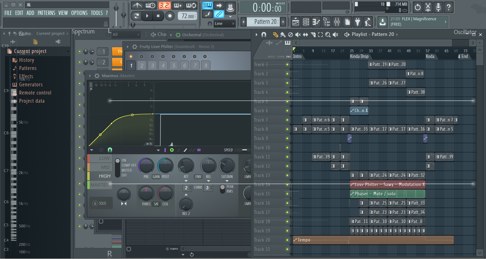

Доброе утро, славяне!
Славяне — значит, вряд ли поняли название статейки из японских рисуночков.
Однако между тем мне довольно проблематично перевести его на русский, поскольку перевод в любом случае будет со значительными потерями.
Короче, по порядку.
А по порядку — значит, из далекого-далекого прошлого.
Да, в этот раз придется Хико отступить от своего стиля сразу брать быка за рога.
Итак, больше полугода назад — где-то в первых числах октября прошлого года — я как-то совершенно случайно, на одном дыхании зафигачил довольно интересный трек. Настолько интересный, что я не опубликовал его ни сразу, ни на следующий день, ни спустя недельку, как у меня это уже когда-то бывало, а решил дать ему конкретно «настояться». И за эти полгода я исправил много недочетов и добавил еще больше интересных нюансов, так что сейчас… наверное, без преувеличения могу гордиться этим треком как лучшей работой в моем портфолио композитора и аранжировщика.
Нет, по факту еще остались пара мелочей, но уж извини, мой внутренний супер-перфекционист-сан, мои скиллы еще не доросли до твоих замашек. Я и так тебе больше полугода потакал.
Плюс за это время мне пришла идея очередной задумки-проекта.
Мини-альбома по типу «Времена года».
Он будет состоять из четырех инструментальных треков, каждый под свое время года: весна, лето, осень, зима.
Однако на названия треков времена года не годятся: слишком абстрактно и расплывчато они звучат. Поэтому я обратился к японской культуре и каждое время года обозначил через какой-то объект — символ в понимании японцев.
Как-то так:
- 花 — цветок, символ ВЕСНЫ.
- 嵐 — буря, символ ЛЕТА.
- 月 — луна, символ ОСЕНИ.
- 雪 — снег, символ ЗИМЫ.
Произношения соответственно: Хана, Араси, Цуки, Юки.
Название мини-альбома просто представляет эти четыре кандзи (иероглифа) в этом же порядке, поэтому его сложно перевести нормально без потерь.
С произношением альбома тоже непросто. Как насчет хана-араси-цуки-юки? :D
Ладно, есть у меня вариант покороче — с использованием он-ёми этих кандзи: ка-ран-гэцу-сэцу, или еще чуть короче: Карангэссэцу. Правда, не нравится мне такое произношение: какое-то резкое и грубое.
Наверное, самым стандартным решением был бы релиз всех четырех треков одновременно, чуть менее — релиз по порядку, но Хико плюет на стандарты с высокой вышки (вон она, за окном виднеется, инет зажимает), поэтому начал релиз со второго трека.
(Спойлер: следующим, возможно, выйдет Юки.)

Ну а теперь поговорим конкретно про Араси.
Как я уже сказал, он был начат (и за два-три дня более-менее доведен до ума) где-то в начале октября и с тех пор претерпел немало хороших изменений.
Однако кое-что утвердилось сразу и до сих осталось неизменным.
Глубокий смысл, заложенный в сие произведение.
Его тональность — фа-минор. К тому же, она постоянна на протяжении всего трека, что уже стало редкостью для Хико — любителя модуляций в конце. Минорный лад делает атмосферу какой-то грандиозной и тяжелой — в самый раз для бури. А тонику фа можно назвать некой отсылкой к ветру: японский кандзи с этим значением 風 имеет он-ёми фуу.
По структуре трек имеет простейшую трехчастную форму: А-Б-А.
Этот трек вообще сам по себе крайне простой, откуда ни посмотри: лайтовые мелодии, примитивные, но приятные гармонии, легкая аранжировка.
А-часть. С нее все начинается, и ей же все заканчивается. Она спокойная и умиротворяющая за счет темпа 72 bpm и мягких инструментов: арфа, флейта, скрипки, вступающий чуть позже гобой.
Кстати, каждый инструмент также несет свою смысловую нагрузку.
Начнем с арфы. Она слышна практически во всем треке и постоянно играет четырехступенным восходящим арпеджио. Она сама по себе символизирует (ну, в моем восприятии) природу, естество, а арпеджио изображает динамику, постоянное движение. Поскольку речь идет о буре, двигаются воздух и облака.
Флейта — духовой инструмент. Пожалуй, вместо долгих объяснений я могу привести любопытный факт: духовые инструменты в английском обозначаются словом wind — тем же, что и ветер.
Скрипки… точнее, секция скрипок здесь просто играет гармонию. Их смысловая нагрузка, пожалуй, в мягкости звучания, что помогает создавать атмосферу.
Когда партия флейты кончается, вступает гобой. Вспомнив еще раз интересный факт из инглиша, продолжу: гобой звучит звонче и как-то навязчивее, чем флейта, плюс вступает он вместе с контрабасами. Таким образом, происходит развитие в А-части: музыка наполняется новыми инструментами, становится громче и заставляет атмосферу сильнее давить на слушателя — как надвигающаяся буря.
И тут начинается Б-часть!
Темп резко взлетает с 72 до 110 bpm! Арпеджио арфы становится почти в два раза быстрее, вступают синтетические инструменты и ударные. Снова по нарастающей: постепенно поднимается частота среза фильтра синкопной мелодии и прерывистых аккордов пилообразной волны, появляется трескучий бас (по-английски это называется reese, так что далее так и буду его звать риз-басом), учащается ритм ударных.
Как только тучи окончательно накрыли небо и сильный ветер стал ураганом, началась настоящая буря.
Когда речь идет о драйве в музыке, первое, что вспоминается — гитара с дистошн. Рок-гитара, если по-простому.
Вот она и ведет главную мелодию шторма под неугомонное арпеджио арфы (которое и слышно-то уже плоховато — все затмила стихия), треск риз-баса, подобный раскатам грома, и гармонии пилообразных синтов, шипящие, как ветер и шум дождя. Некоторые мотивчики мелодии повторяются коротким тихим синтом с реверберации — будто эхо.
У второй мелодии шторма аккомпанемент ровно такой же, что у третьей, но сама она уже не такая динамичная и драйвовая, да и звучит чуть слабее. Видать, буря уже исчерпала свой основной запас энергии, но пока еще не отступила.
Я много раз наблюдал, как после дождя как из ведра, льющего в лучшем случае несколько минут, некоторое время продолжается просто ливень-среднячок.
И буря уходит.
Резко, но не так, как пришла.
Если на приход ей понадобилось лишь одно мгновение, то уход затянулся на две доли — именно столько темп по прямой линии постепенно опускается от 110 обратно к 72 — и мы возвращаемся к А-части.
Кстати, не спрашивайте меня, почему именно такие бпмники. Я их выбирал чисто по восприятию, так что, пожалуй, единственная нагрузка, которую эти циферки несут — участие в создании атмосферы. Да и вообще они относительны.
Мелодии, гармонии и аранжировка заключительной части совершенно идентичны вступительной, однако разница есть, и она в том, что кода, в противоположность вступлению, успокаивается. Мы не слышим давящей партии гобоя, уходят отяжеляющие атмосферу октавы контрабасов.
Однако вскоре и флейта со скрипками затихают.
И в самом конце мы слышим одинокий ксилофончик, завершающий произведение фразой флейты.
Мы понимаем, что буря прошла и установилось спокойствие, однако незавершенность партии ксилофона, обрывающейся на шестой ступени (имеется в виду не фа, на которой формально заканчивается мелодия, а основание аккорда гармонии — ре-бемоль), не полностью закрывает мысль.
Да и движение еще осталось: на фоне повторения мелодии звучит ритмичная восходящая хроматическая гамма.
То есть, сейчас-то может быть и стало спокойно, но кто знает, что будет дальше?..
Этот нюанс подчеркивает и следующая фишка: когда вступает ксилофон, темп еще чуть опускается — до 55 bpm. То есть ровно до половины 110 — темпа штормовой Б-части. Пожалуй, это единственный бпм, который я выбрал уже не по чутью, а по математике.
Вот это да…
Получается, это мой первый опыт искусствоведческой статьи.
Шкильные сочинения совсем не в счет.
А ведь все-таки весело разбирать по запчастям свое же творчество.
Попробую продолжать анализировать и свои следующие треки, так что так просто от меня не отделаешься!

Чуть не забыл про кредиты:
Абсолютно весь контент статьи: Masahiko AMANO a.k.a. H1K0, 2020